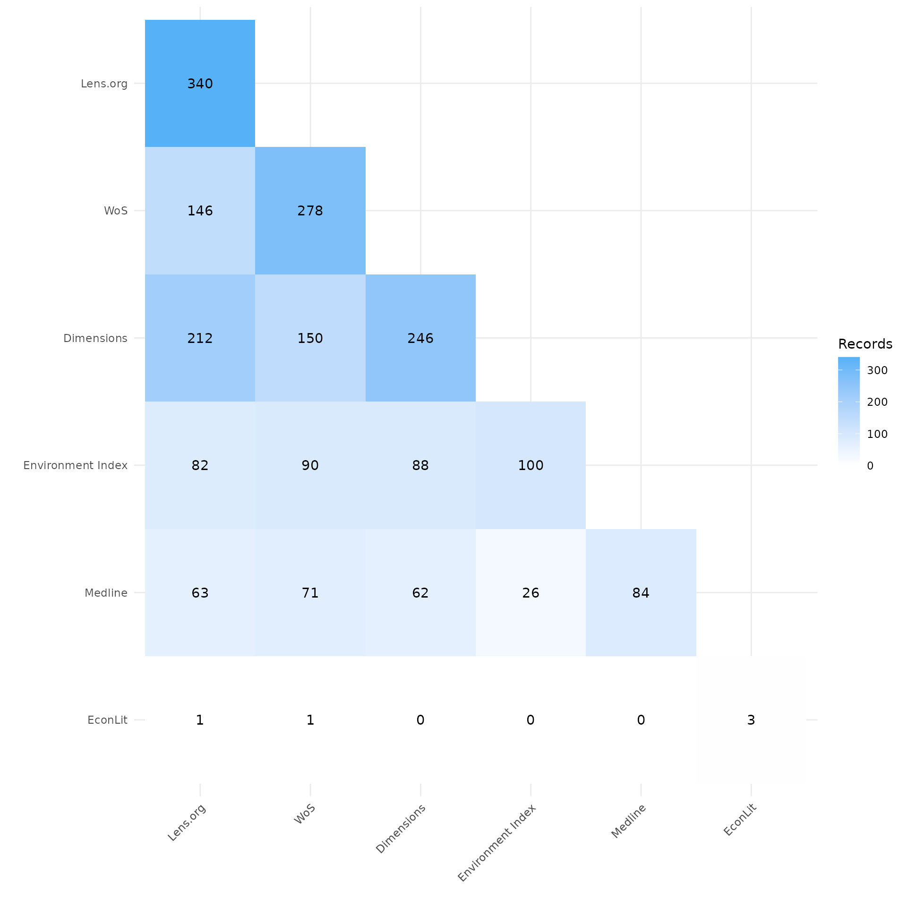
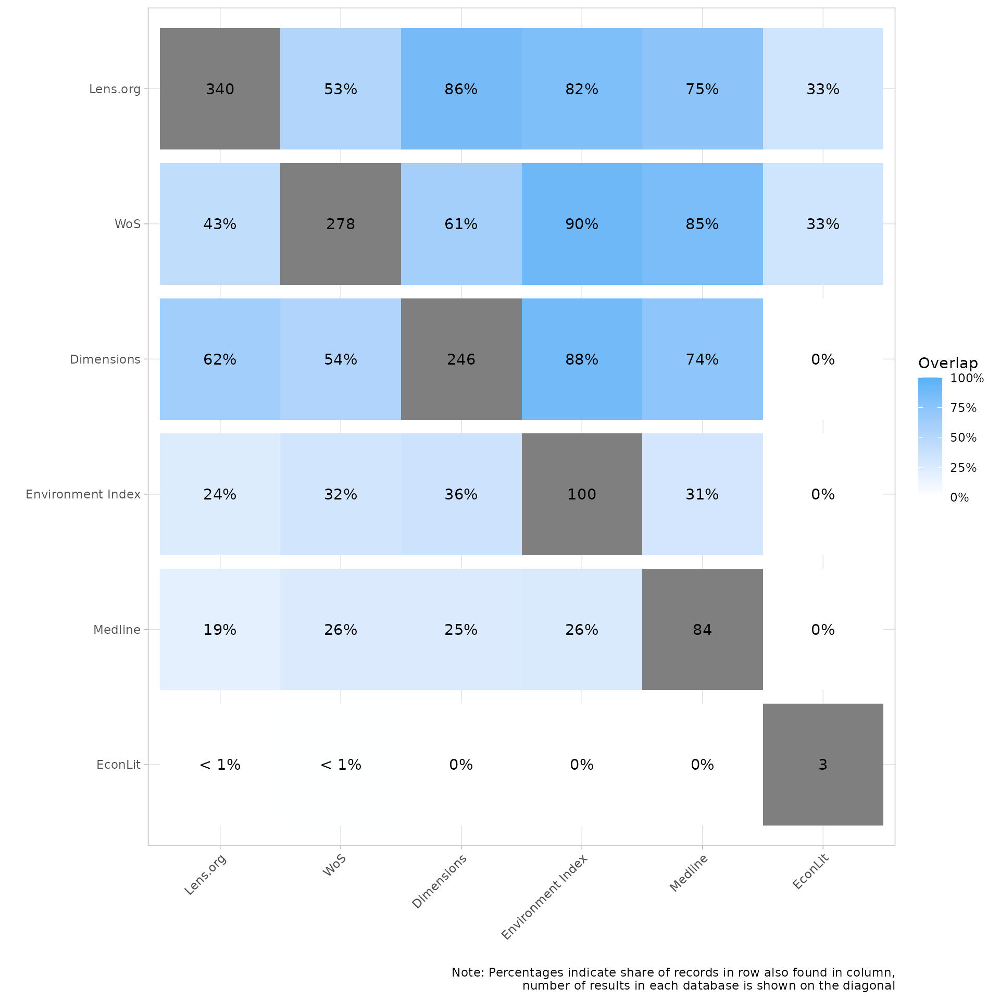
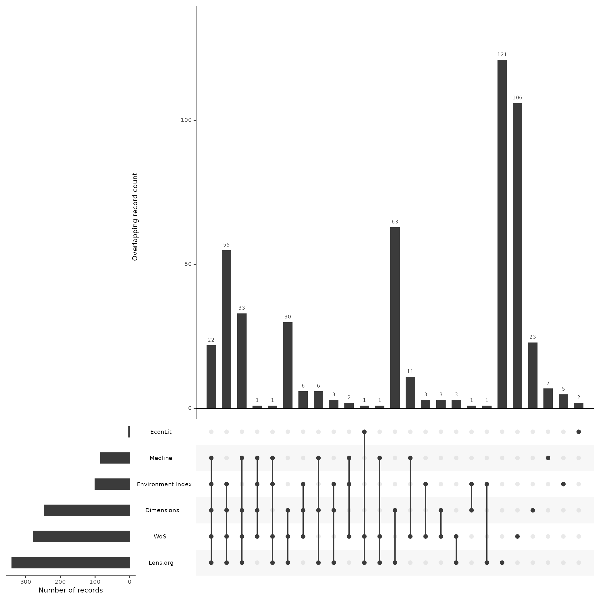
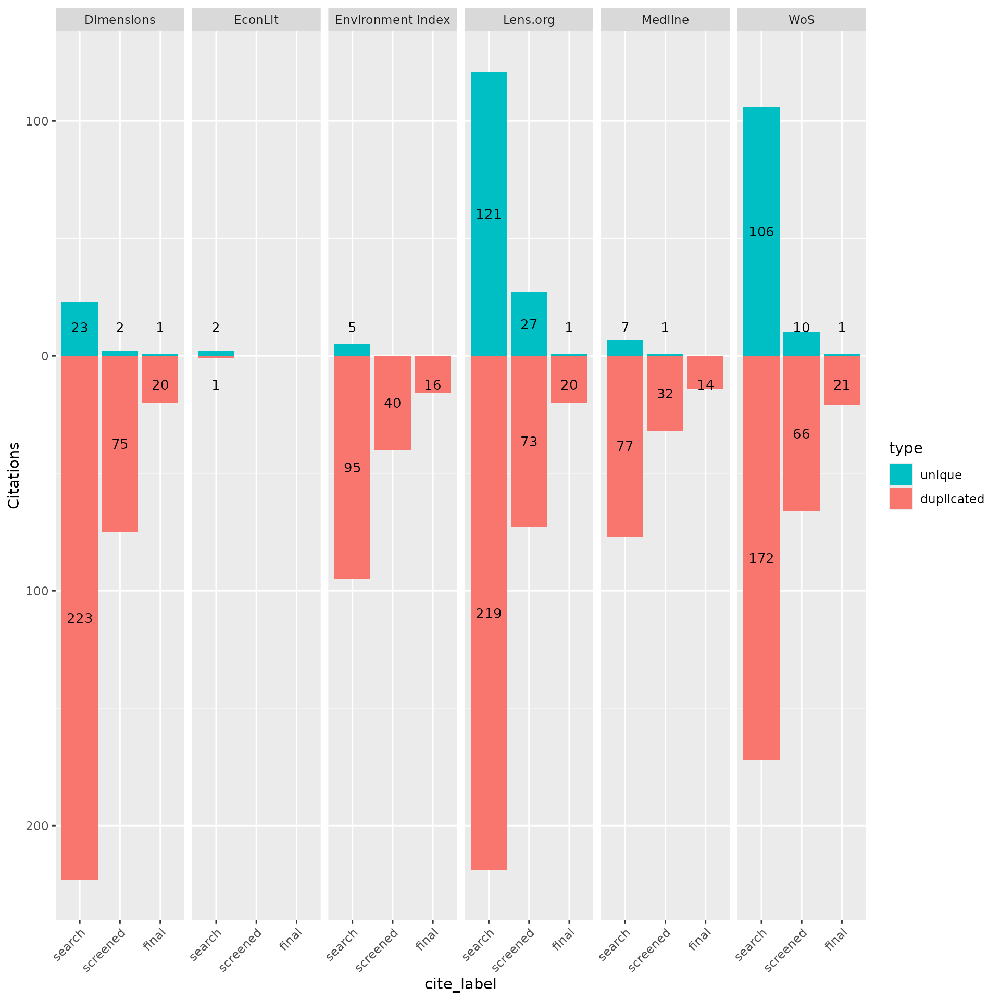

Source Analysis Across Screening Phases
2026-06-17
Source:vignettes/citesource_analysis_across_screening_phases.Rmd
citesource_analysis_across_screening_phases.RmdAbout this vignette
This vignette demonstrates how CiteSource can assess the impact of sources and methods across an evidence synthesis project — from initial searching through to final inclusion.
A reliable systematic search requires multiple resources to minimize the risk of missing relevant studies. Beyond traditional databases, supplementary methods such as hand searching, citation chasing, and grey literature searching are commonly employed. But how much is each source actually contributing? Which databases are finding the studies that ultimately matter? CiteSource can help answer these questions by tracking where each record came from and following it through each stage of screening.
The data in this vignette is based on a mock systematic review on the health, environmental, and economic impacts of wildfires.
If you have questions or feedback, visit the CiteSource discussion board on GitHub.
1. Installation and setup
#install.packages("CiteSource")
library(CiteSource)2. Import citation files
Start by importing your .ris or .bib files.
CiteSource works with files exported directly from any database or
resource.
file_path <- "../vignettes/new_stage_data/"
citation_files <- list.files(path = file_path, pattern = "\\.ris", full.names = TRUE)
citation_files
#> [1] "../vignettes/new_stage_data//Dimensions_246.ris"
#> [2] "../vignettes/new_stage_data//econlit_3.ris"
#> [3] "../vignettes/new_stage_data//envindex_100.ris"
#> [4] "../vignettes/new_stage_data//final_24.ris"
#> [5] "../vignettes/new_stage_data//lens_343.ris"
#> [6] "../vignettes/new_stage_data//medline_84.ris"
#> [7] "../vignettes/new_stage_data//screened_128.ris"
#> [8] "../vignettes/new_stage_data//wos_278.ris"3. Assign custom metadata
CiteSource provides three custom metadata fields:
cite_source, cite_label, and
cite_string.
cite_source identifies the database or method that
produced each file. The two screening files (records included after
title/abstract screening and after full-text screening) are assigned
cite_source = NA since they do not represent a database
search — they are subsets of records that passed screening.
cite_label tracks the phase each file belongs to:
"search" for initial search results,
"screened" for records included after title/abstract
screening, and "final" for records included after full-text
screening.
imported_tbl <- tibble::tribble(
~files, ~cite_sources, ~cite_labels,
"wos_278.ris", "WoS", "search",
"medline_84.ris", "Medline", "search",
"econlit_3.ris", "EconLit", "search",
"Dimensions_246.ris", "Dimensions", "search",
"lens_343.ris", "Lens.org", "search",
"envindex_100.ris", "Environment Index", "search",
"screened_128.ris", NA, "screened",
"final_24.ris", NA, "final"
) |>
dplyr::mutate(files = paste0(file_path, files))
raw_citations <- read_citations(metadata = imported_tbl)
#> Import completed - with the following details:
#> file cite_source cite_string cite_label citations
#> 1 wos_278.ris WoS <NA> search 278
#> 2 medline_84.ris Medline <NA> search 84
#> 3 econlit_3.ris EconLit <NA> search 3
#> 4 Dimensions_246.ris Dimensions <NA> search 246
#> 5 lens_343.ris Lens.org <NA> search 343
#> 6 envindex_100.ris Environment Index <NA> search 100
#> 7 screened_128.ris <NA> <NA> screened 128
#> 8 final_24.ris <NA> <NA> final 244. Deduplicate and create data tables
CiteSource uses the ASySD algorithm to identify and merge duplicate
records, preserving the cite_source,
cite_label, and cite_string fields from each
duplicate. Note that pre-prints and similar records will not be
identified as duplicates of their published counterparts.
unique_citations <- dedup_citations(raw_citations)
#> formatting data...
#> identifying potential duplicates...
#> identified duplicates!
#> flagging potential pairs for manual dedup...
#> 1206 citations loaded...
#> 690 duplicate citations removed...
#> 516 unique citations remaining!
n_unique <- count_unique(unique_citations)
source_comparison <- compare_sources(unique_citations, comp_type = "sources")5. Review internal duplication
Before comparing sources it is helpful to confirm that internal deduplication ran as expected. The initial record table shows how many records were imported from each source and how many distinct records remained after within-source duplicates were removed.
In this case, Lens.org had 343 records in the original file but only 340 distinct records after internal deduplication. Medline shows 84 for both, meaning no within-source duplicates were found.
initial_records <- calculate_initial_records(unique_citations, "search")
create_initial_record_table(initial_records)| Record Counts | ||
| Records Imported1 | Distinct Records2 | |
|---|---|---|
| Dimensions | 246 | 246 |
| EconLit | 3 | 3 |
| Environment Index | 100 | 100 |
| Lens.org | 343 | 340 |
| Medline | 84 | 84 |
| WoS | 278 | 278 |
| Total | 1054 | 1051 |
| 1 Number of records imported from each source. | ||
| 2 Number of records after internal source deduplication. | ||
6. Analyze overlap across sources
Heatmaps
The count heatmap is organized by source in order of record count, with the source total at the top of each column. Cell values show the number of records that overlapped between each pair of sources. Of the 340 records from Lens.org, 212 were also found in Dimensions and 146 were found in Web of Science. Of the 100 records from Environment Index, 82 were also found in Lens.org.
The percentage heatmap expresses those same overlaps as proportions. The 82 records shared between Environment Index and Lens.org represent 82% of Environment Index’s records, but only 24% of Lens.org’s records.
plot_source_overlap_heatmap(source_comparison)
plot_source_overlap_heatmap(source_comparison, plot_type = "percentages")
Upset plot
The upset plot shows overlap across all source combinations simultaneously. EconLit had only three results, but two of those were unique to that source. The single non-unique EconLit record was found in both Lens.org and Web of Science. Lens.org and Web of Science contributed the most unique records overall, and Dimensions and Lens.org had the greatest pairwise overlap, with 63 shared records not found in any other source.
plot_source_overlap_upset(source_comparison, decreasing = c(TRUE, TRUE))
#> Plotting a large number of groups. Consider reducing nset or sub-setting the data.
7. Analyze records across screening phases
By including the cite_label data, we can now track each
source’s records through screening. The contributions plot shows unique
(green) and shared (red) record counts from each source at each phase —
search, screened, and final.
Despite Lens.org and Web of Science contributing the highest numbers of unique records at the search stage, each contributed only a single unique citation to the final included set.
plot_contributions(n_unique,
center = TRUE,
bar_order = c("search", "screened", "final")
)
8. Analyze data with tables
Detailed record table
The detailed record table builds on the initial record table by adding unique and non-unique counts and three percentage columns.
- Source Contribution % — each source’s share of the total distinct records after cross-source deduplication
- Source Unique Contribution % — each source’s share of the total unique records
- Source Unique % — the proportion of each source’s distinct records that were unique
For example, Lens.org had 340 distinct records out of 1,051 total before deduplication (32.4% contribution). Of those, 121 were unique — 45.8% of all unique records across the search.
detailed_counts <- calculate_detailed_records(unique_citations, n_unique, "search")
create_detailed_record_table(detailed_counts)| Record Summary | |||||||
|
Records
|
Uniqueness
|
Contribution to Total
|
Within-source Rate
|
||||
|---|---|---|---|---|---|---|---|
| Imported1 | Distinct2 | Unique3 | Shared4 | % of All Distinct5 | % of All Unique6 | Unique Rate7 | |
| Dimensions | 246 | 246 | 23 | 223 | 23.4% | 8.7% | 9.3% |
| EconLit | 3 | 3 | 2 | 1 | 0.3% | 0.8% | 66.7% |
| Environment Index | 100 | 100 | 5 | 95 | 9.5% | 1.9% | 5.0% |
| Lens.org | 343 | 340 | 121 | 219 | 32.4% | 45.8% | 35.6% |
| Medline | 84 | 84 | 7 | 77 | 8.0% | 2.7% | 8.3% |
| WoS | 278 | 278 | 106 | 172 | 26.5% | 40.2% | 38.1% |
| Total | 1054 | 8 510 | 264 | 787 | NA | NA | NA |
| 1 Number of raw records imported from each database. | |||||||
| 2 Number of records after internal source deduplication. | |||||||
| 3 Number of records not found in another source. | |||||||
| 4 Number of records found in at least one other source. | |||||||
| 5 Percent distinct records contributed to the total number of distinct records. | |||||||
| 6 Percent of unique records contributed to the total unique records. | |||||||
| 7 Percentage of records from each source that were unique. | |||||||
| 8 Total citations discovered (after internal and cross-source deduplication). | |||||||
Precision and sensitivity table
The precision/sensitivity table incorporates the screening phase data to calculate two metrics for each source:
Precision = Final records from source / Distinct records from source
Sensitivity = Final records from source / Total final records across all sources
Of the 340 records from Lens.org, 100 were included after title/abstract screening and 16 after full-text screening. This gives Lens.org a precision of 4.7% and a sensitivity of 66.7% — meaning it contributed the majority of the final included set despite a low precision rate.
phase_counts <- calculate_phase_records(unique_citations, n_unique, "cite_source")
create_precision_sensitivity_table(phase_counts)| Record Counts & Precision/Sensitivity | |||||
|
Records
|
Performance
|
||||
|---|---|---|---|---|---|
| Distinct Records1 | Screened Included2 | Final Included3 | Precision4 | Sensitivity/Recall5 | |
| Dimensions | 246 | 77 | 21 | 8.5% | 87.5% |
| EconLit | 3 | 0 | 0 | 0.0% | 0.0% |
| Environment Index | 100 | 40 | 16 | 16.0% | 66.7% |
| Lens.org | 340 | 100 | 21 | 6.2% | 87.5% |
| Medline | 84 | 33 | 14 | 16.7% | 58.3% |
| WoS | 278 | 76 | 22 | 7.9% | 91.7% |
| Total | 6 516 | 7 126 | 8 24 | 9 4.7% | NA |
| 1 Number of records after internal source deduplication. | |||||
| 2 Number of citations included after title/abstract screening. | |||||
| 3 Number of citations included after full text screening. | |||||
| 4 Number of final included citations / Number of distinct records. | |||||
| 5 Number of final included citations / Total number of final included citations. | |||||
| 6 Total citations discovered (after internal and cross-source deduplication). | |||||
| 7 Total citations included after Ti/Ab Screening. | |||||
| 8 Total citations included after full text screening. | |||||
| 9 Overall Precision = Number of final included citations / Total distinct records. | |||||
9. Record-level table
The record-level table lets you inspect which individual final-included citations came from which sources — useful for verifying coverage and for reporting in supplementary materials.
unique_citations |>
dplyr::filter(stringr::str_detect(cite_label, "final")) |>
record_level_table(return = "DT")10. Exporting for further analysis
CiteSource can export deduplicated results as CSV, RIS, or BibTeX files, and reimport them to resume analysis later without repeating the deduplication step.
#export_csv(unique_citations, filename = "citesource_export_phases.csv")
#export_ris(unique_citations, filename = "citesource_export_phases.ris", source_field = "DB", label_field = "C5")
#export_bib(unique_citations, filename = "citesource_export_phases.bib", include = c("sources", "labels", "strings"))
# Reimport a previously exported file
#unique_citations <- reimport_csv("citesource_export_phases.csv")
#unique_citations <- reimport_ris("citesource_export_phases.ris")